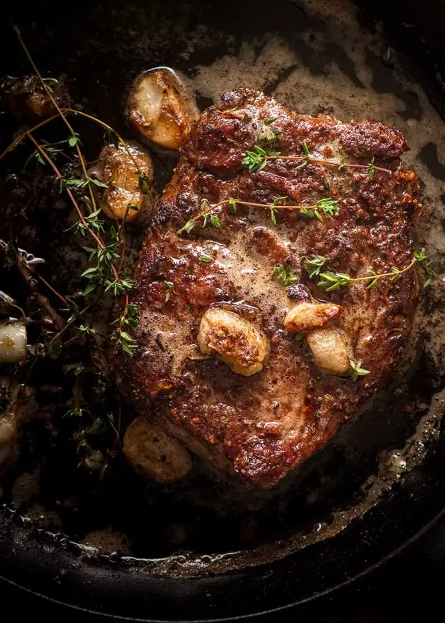

Home
Steak
:max_bytes(150000):strip_icc():focal(1099x739:1101x741):format(webp)/fm21-makeover-broiled-balsamic-soy-flank-steak-photo-by-carson-downing-cropped-2000-f2c47972b51e4570a49ec8a1963a0cd0.jpg)
Let's Cook Steak!
The secret to cooking the perfect steak is time.
We'll start cooking as soon as we gather these ingredients

Steak
Garlic
Butter
Salt
Pepper
Now that we've gathered the ingredients, Lets cook!
- Rub Salt And Pepper on steak, covering all sides
- Heat pan with Butter and garlic inside
- Cook steak for 2 minutes on each side, till darkened
- Bast steak with butter for 3 minutes while off heat